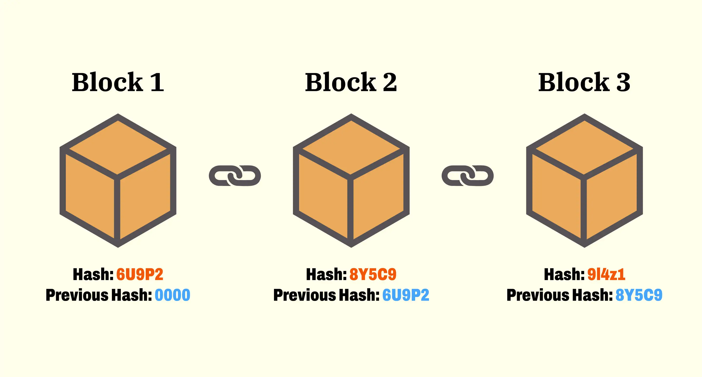

블록체인 기술: 분산된 미래의 핵심
1. 블록체인이란?
블록체인은 데이터를 분산된 디지털 장부에 저장해 신뢰와 투명성을 보장하는 기술입니다. 각 블록은 거래 데이터, 타임스탬프, 암호화 해시를 포함하며, 이전 블록의 해시로 연결되어 체인을 형성합니다. 중앙 서버 없이 네트워크의 노드들이 데이터를 공유하고 검증합니다.

그림: 블록체인의 체인 구조
2. 핵심 특징
- 분산화: 중앙 기관 없이 모든 노드가 데이터를 공유.
- 불변성: 블록 데이터는 수정 불가, 위변조 방지.
- 투명성: 거래 내역은 누구나 확인 가능.
- 보안성: 암호화(SHA-256)로 데이터 보호.
- 효율성: 중개자 제거로 비용과 시간 절감.
3. 주요 기술 구성
3.1. 작업 증명(PoW)
채굴자가 복잡한 계산을 통해 블록을 검증하는 합의 알고리즘. 비트코인에서 사용되며, 보안성이 높지만 에너지 소비가 크다.
3.2. 지분 증명(PoS)
코인 보유량에 따라 검증 권한을 부여. 이더리움 2.0에서 채택, 에너지 효율적.
3.3. 스마트 계약
조건이 충족되면 자동 실행되는 코드. 예: 이더리움의 ERC-20 토큰.
4. 활용 사례
암호화폐
비트코인, 이더리움 등으로 안전한 디지털 화폐 거래.
공급망 관리
월마트, IBM Food Trust가 물류 추적에 활용.
금융 서비스
DeFi 플랫폼(예: Aave)으로 대출, 이자 지급 자동화.
헬스케어
환자 데이터의 안전한 공유와 프라이버시 보호.
NFT
디지털 자산(예: OpenSea)의 소유권 증명.
5. 2025년 블록체인 트렌드
2025년 블록체인은 다양한 산업에서 주목받고 있습니다:
- 중앙은행 디지털 화폐(CBDC): 한국, 중국 등에서 디지털 원화/위안화 시범 운영.
- Layer 2 솔루션: 이더리움의 Optimism, Arbitrum으로 확장성 개선.
- 친환경 블록체인: PoS 기반 네트워크로 탄소 배출 저감.
- Web3: 탈중앙화 인터넷으로 데이터 주권 강화.
6. 장단점
| 장점 | 단점 |
|---|---|
| 높은 보안성과 신뢰성 | PoW 기반 높은 에너지 소비 |
| 중개자 제거로 비용 절감 | 확장성 문제(트랜잭션 속도) |
| 투명한 데이터 관리 | 규제와 법적 불확실성 |
| 다양한 산업 적용 가능 | 기술적 복잡성 |
해결책: PoS, Layer 2 솔루션, 하이브리드 블록체인으로 단점 보완 중.